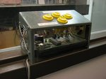
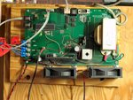

|
|
Gifford City includes a scale model of the Green Building (MIT building number 54), the tallest building in Cambridge, and home to MIT's Department of Earth, Atmospheric and Planetary Sciences. The real Green Building was designed by I.M. Pei, and was built in 1962-1964.
Unlike many buildings on model railroads, the Green Building is full scale, with no compression. That is to say it was built at 1:87.1 scale (full HO scale) from the original building plans, checked out from the MIT archives. The model of the Green Building stands at one end of the Gifford City skyline, which serves as a view block between two different scenes.

The model contains a sturdy internal structure of plywood and lumber. The facade consists of basswood strips, some of which have been shaped on a router. In window areas, the basswood is glued to Lexan sheets with contact cement. One side of the model is equipped with circuit boards allowing people to play Tetris in lights on the side of the building. Two controllers have been built. The first is mounted in the hall outside the club room, allowing people to play Tetris even when we're not in the room. This controller is equipped to play the authentic music from the Nintendo GameBoy version of Tetris; the specific song played is determined by the button pressed to start the game. We remove the Green Building from the layout once a year and take it to a recruiting event on campus; the second controller was made to let people play the game when the building has been removed from the layout, and does not play sound (sound being generally forbidden at recruiting events). When the Tetris game is not being played, the lights on the side of the building periodically spell out TMRC (as shown in the picture).

The game logic for the Green Building Tetris is located in a controller located under the layout that connects to the Green Building by a bundle of wires. Messages from the controller in the hallway are passed to the Green Building through a serial network that runs through a computer in the club room. The same network is used to run the room lights controller.
|
Tech Model Railroad Club of
MIT Room N52-118 265 Massachusetts Avenue Cambridge, MA 02139
|
+1 617 253-3269 Email: tmrc-web@mit.edu |
{kind=link}
{kind=link}